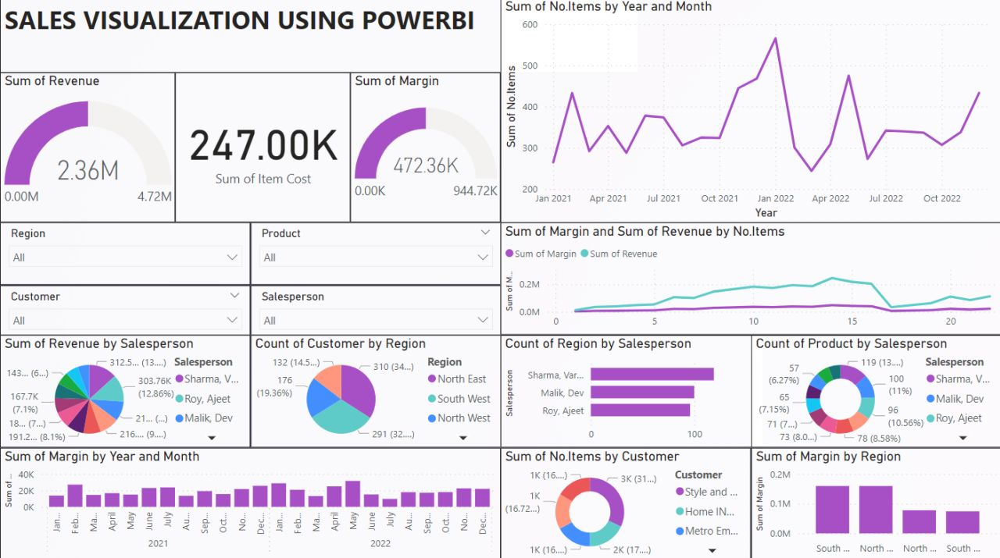

AI / ML ENGINEER · COMPUTER VISION · RESEARCH
Harshitha
B.
Building intelligent systems with machine learning, computer vision and generative AI.
M.Tech CSE graduate specializing in Artificial Intelligence & Machine Learning, with research work spanning medical imaging, cardiac function analysis, synthetic-media detection and structured LLM generation.
SCROLL TO EXPLORE
01 / 08
01 — ABOUT
RESEARCH-DRIVEN AI
From data
to intelligent systems.
I develop machine learning and deep learning systems that connect research ideas with practical applications. My work focuses on computer vision, explainable AI, medical imaging, synthetic-media detection and generative AI.
My M.Tech work combines end-to-end echocardiography analysis with quantitative cardiac measurements and structured language-model generation. I also work across multimodal deepfake detection and video classification.
8.92
M.Tech CGPA / 10
0.94
EchoNet Dice
0.613
LVEF R²
02
Research Publications
02 — TECHNICAL STACK
TOOLS I BUILD WITH
Technical toolkit.
Focused on practical ML development, deep learning experimentation, computer vision and generative AI.
Deep Learning
Computer Vision
NLP & Generative AI
Data & Databases
Cloud & Tools
03 — RESEARCH / THESIS
FEATURED RESEARCH
Explainable AI for
Echocardiography
An end-to-end deep learning pipeline for left-ventricular segmentation and LVEF estimation from apical four-chamber echocardiography videos, with structured clinical report generation using Mistral-7B.
01Echo VideoApical 4-chamber
→
02LV SegmentationU-Net
→
03ED / ESCavity dynamics
→
04LVEFQuantitative metrics
→
05Structured ReportMistral-7B
0.94Dice
0.86IoU
6.16EF MAE (pp)
0.613R²
TECHNOLOGY
Python · PyTorch · U-Net · Mistral-7B · CAMUS
04 — SELECTED PROJECTS
APPLIED AI
Built to solve.
Selected work across synthetic-media detection, multimodal AI and data visualization.
Authentic vs
AI-Generated Video
Deep learning pipeline for authentic vs AI-generated video classification using frame-level visual features and temporal sequence analysis.
FACE CROP→150 FRAMES→ResNeXt→RNN / DNN
Audio-Visual
Deepfake Detection
Multimodal pipeline combining face and voice analysis to distinguish authentic and AI-generated media.
IEEE Xplore ↗Power BI
Sales Visualization
Interactive dashboard for revenue, margin, product, regional, customer and salesperson analysis.

05 — EXPERIENCE
AI / ML INTERNSHIP · REMOTE
Elevate Labs
Aug 2025 — Sep 2025
BEST
PERFORMER
PERFORMER
Hands-on AI/ML work spanning exploratory data analysis, regression, classification, ensemble learning, KNN, SVM and K-Means clustering using Python and Scikit-learn.
01
AI Text Summarization
Built a text summarization web application using Hugging Face Transformers, T5-small and Flask, including summary-length statistics.
View GitHub ↗
02
Flask + SQLite CRUD
Developed a CRUD web application with Flask, SQLite and Jinja templates for user creation, retrieval, updating and deletion.
View GitHub ↗
03
Machine Learning Tasks
Worked through supervised and unsupervised learning workflows including regression, classification, ensemble methods, KNN, SVM and K-Means.
06 — PUBLICATIONS
RESEARCH OUTPUT
Published work.
2025
IJRDES · MARCH 2025
A Robust Deep Learning Approach for Discriminating Between Authentic and AI-Generated Videos
Deep learning approach for distinguishing authentic video content from AI-generated videos.
2025
ICECA 2025 · IEEE
Deep Learning for Audio-Visual Deepfake Detection: A Study on Face and Voice Synthesis
Multimodal deepfake detection study combining visual and audio information for face and voice synthesis analysis.
07 — EDUCATION
2024 — 2026
VELLORE INSTITUTE OF TECHNOLOGY · VELLORE
M.Tech — Computer Science & Engineering
Artificial Intelligence & Machine Learning
08 — CONTACT
Let's build something
intelligent.
Open to AI/ML, computer vision, data and research opportunities.
harshithabhaskaran1@gmail.com↗